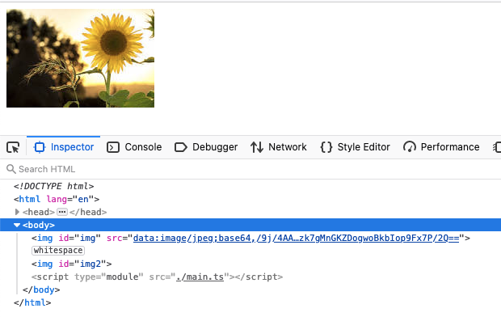

Display Blob as Image
接口返回的是图片的二进制，是一个 Blob 对象。
用 <img> 展示的时候，要设置对应的 src，此时需要将返回的 Blob 转换成 img 的 src。
URL.createObjectURL()
使用 URL.createObjectURL() 可以将返回的 Blob 转换成一个 URL。
const imageURL = "https://encrypted-tbn0.gstatic.com/images?q=tbn:ANd9GcSw0gWlEimLsPylCKAm95y1K27fCdzXEHGhXYTfEWXo&s" fetch(imageURL).then((res) => { return res.blob() }).then((blob) => { const imageObjectURL = URL.createObjectURL(blob); document.querySelector("#img").src = imageObjectURL })
需要注意的是每次调用都会生成一个新的 URL，哪怕是同一个图片。当文档 (document) unloaded 时，这些生成的 URLs 才会被销毁。
为了避免 URLs 被大量创建造成内存问题，最好在不需要这些 URL 的时候用 URL.revokeObjectURL() 将 URL 释放。
FileReader.readAsDataURL()
另一种方法是通过 FileReader 的 API，将返回的 Blob 转换成 Base64 显示。
readAsDataURL 方法会读取指定的 Blob 或 File 对象。读取操作完成的时候， readyState 会变成已完成 DONE，并触发 loadend 事件，同时 result 属性将包含一个data:URL 格式的字符串（base64 编码）以表示所读 取文件的内容。
const imageURL = "https://encrypted-tbn0.gstatic.com/images?q=tbn:ANd9GcSw0gWlEimLsPylCKAm95y1K27fCdzXEHGhXYTfEWXo&s" function blob2Base64(blob) { const reader = new FileReader(); reader.readAsDataURL(blob); return new Promise((resolve) => { reader.onloadend = () => { resolve(reader.result) }; }) } fetch(imageURL).then((res) => { return res.blob() }).then(async (blob) => { document.querySelector("#img").src = await blob2Base64(blob) })
